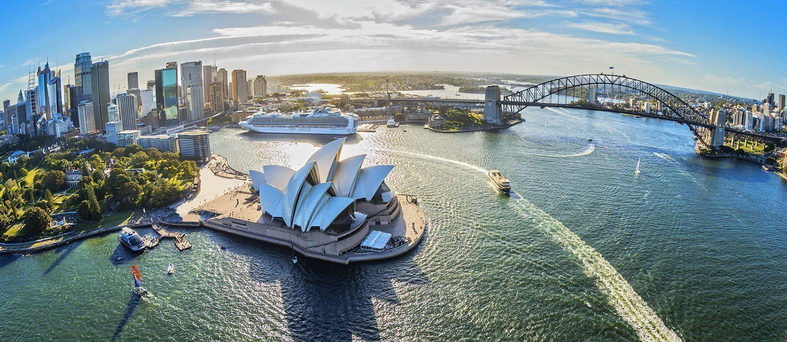

SYDNEY HARBOUR

BONDI

WESTFIELD CENTER

Sydney er Australias største og eldste by (etablert 1788). Med over 4 millioner innbyggere, er Sydney-metropolen den største og mest innflytelsesrike av de to finansielle, transport, handel og kulturelle sentrene i Australia (det andre er Melbourne).
For mange er Sydney selve symbolet på Australia. Over 20% av Australias innbyggere er bosatt i Sydney, og over to tredjedeler av alle turister som besøker landet tar en tur innom denne byen. Sydney er en betydelig global og nasjonal turistdestinasjon og blir ofte omtalt som en av de flotteste og mest pulserende byene i verden. Sydney var vertssted for Sommer-OL 2000.
Sydney er også kjent for sine flotte strender som ligger like ved byen, mest kjent er nok Bondi Beach og Manly Beach. Sydney er en av verdens mest multikulturelle byer, noe som reflekteres av dens rolle som et viktig mål for innvandrere som ankommer Australia. Sydney er Australias dyreste by å bo i og kommer på 21.-plass over dyreste byer i verden.
Mange slags fester og festivaler foregår i Sydney. 1. januar feires sommeren med The Festival of Sydney. Da foregår det veldig mange konserter, det er mye musikk i gatene, og det er kappseilas på sjøen.Nasjonaldagen Australia Day feires 26. januar. Datoen representerer etableringen av kolonien New South Wales ved Sydney Cove etter at skipene tilhørende First Fleet seilte inn i Port Jackson.